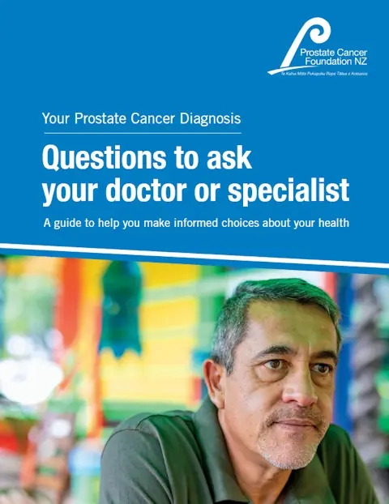

Talking to a Specialist

Questions to ask your doctor or specialist
A prostate cancer diagnosis can leave you anxious and confused, likely with more questions than answers. Being prepared with questions and thoughts can help guide conversations with your specialist or doctor, help you make informed decisions about what to do next and choose the best treatment pathway for you. There is no single best approach, your diagnosis, circumstances and other factors all need to be considered. We’ve listed some of the most commonly asked questions below, which you will find in more detail in the Questions To Ask Your Specialist booklet which you can download and print. If you would like to talk things through with our Information Service Specialist please call 0800 66 0800 or email infoservice@prostate.org.nz
Section 1 of 2